Ambiente curato
Spazi recentemente ristrutturati, puliti e accoglienti.
La tua stanza a Quartu Sant'Elena
A pochi minuti da Cagliari, dal Poetto e dalle spiagge più belle del Sud Sardegna.

La camera
Uno spazio luminoso e curato, con ingresso riservato, bagno privato e cortile esclusivo. Ideale per chi cerca una base tranquilla e comoda per visitare Cagliari e il Sud Sardegna.

Spazi recentemente ristrutturati, puliti e accoglienti.
Camera con bagno privato e cortile ad uso esclusivo.
Contatto diretto, più semplicità e migliore tariffa disponibile.
Gallery
Camera, bagno privato, cortile e dettagli della struttura.
Dintorni
Una selezione di luoghi, servizi e spiagge raggiungibili da Marconi306.
Uno dei simboli del centro storico di Quartu Sant'Elena.
Area verde cittadina ideale per una passeggiata tranquilla.
Ingresso riservato e posizione comoda nel centro di Quartu.
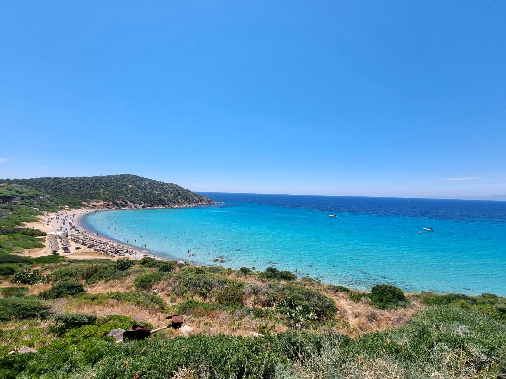
Acqua cristallina e colori intensi nel Golfo degli Angeli.
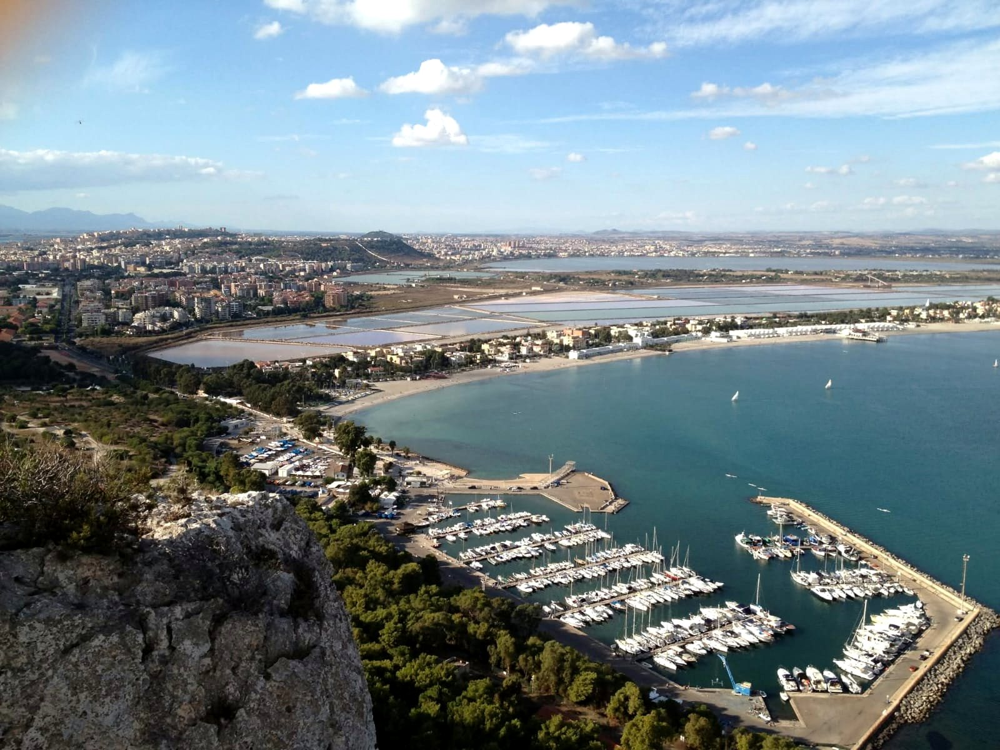
Uno dei panorami più belli su Cagliari, Poetto e Molentargius.
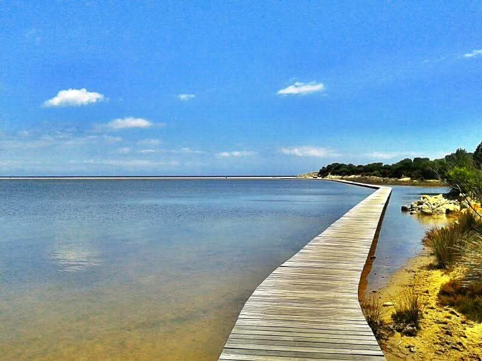
Sabbia chiara, isolotti e acqua limpida per una giornata speciale.
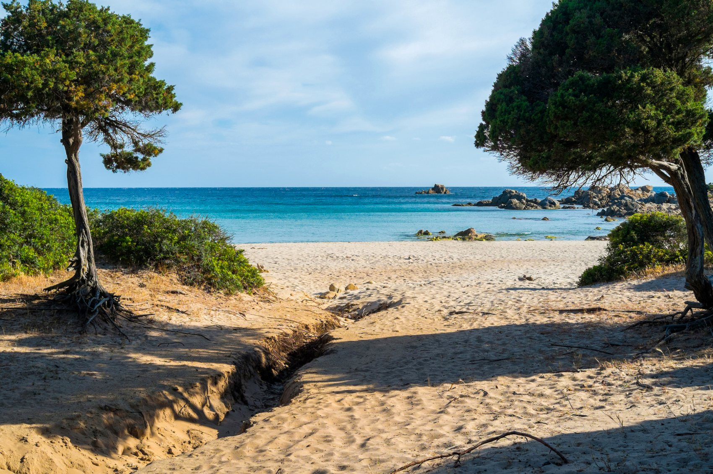
Una cala raccolta, scenografica e più selvaggia.
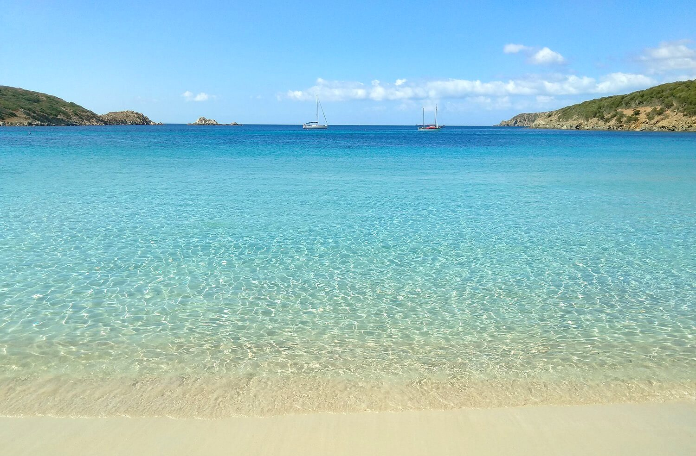
Una delle spiagge più celebri della Sardegna del sud.
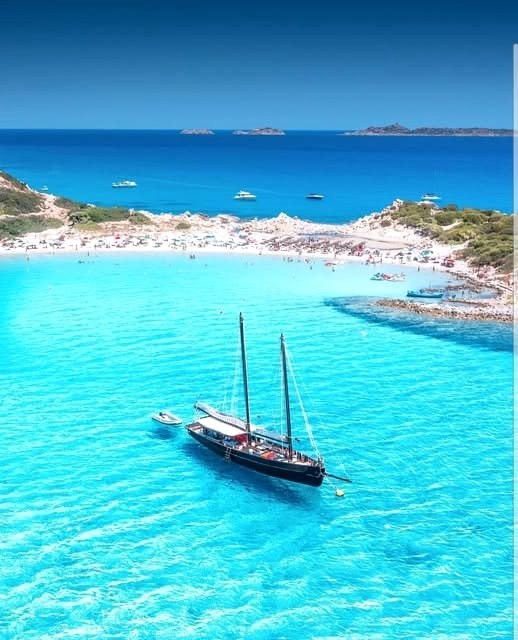
Mare turchese e paesaggio unico nel territorio di Villasimius.
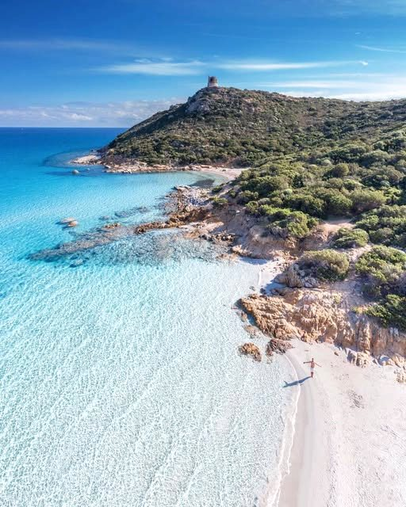
Torre, stagno e spiaggia spettacolare: un classico imperdibile.
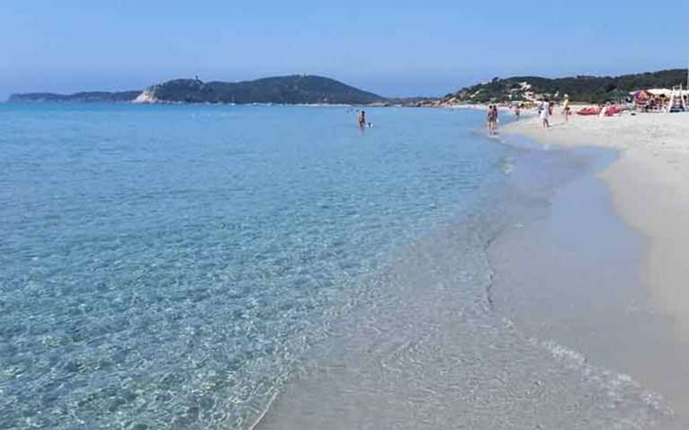
Spiaggia luminosa, mare basso e sabbia chiara.
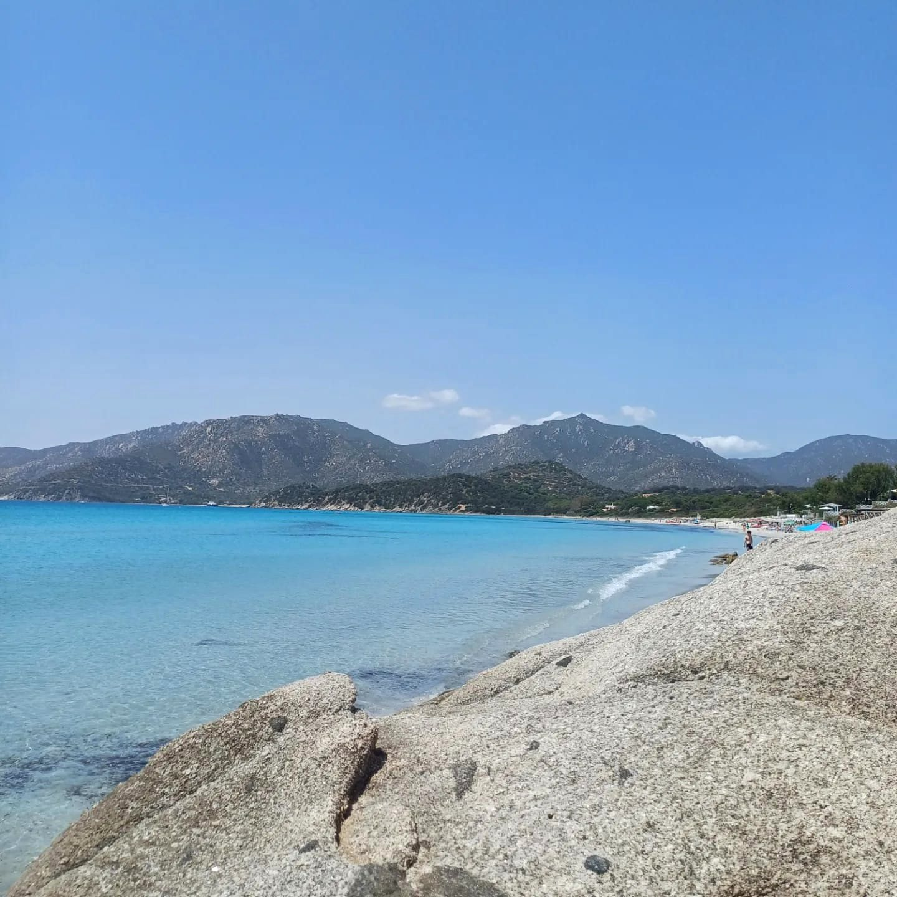
Atmosfera tranquilla, acqua trasparente e panorami di Villasimius.
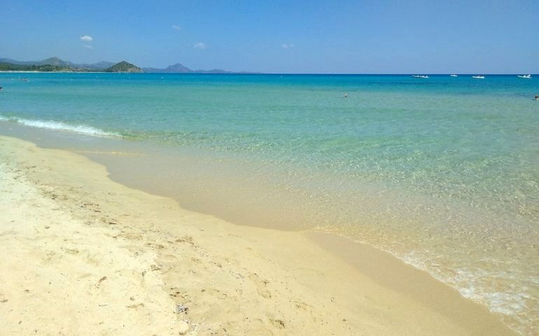
Spiaggia ampia e luminosa, perfetta per passeggiate e relax.
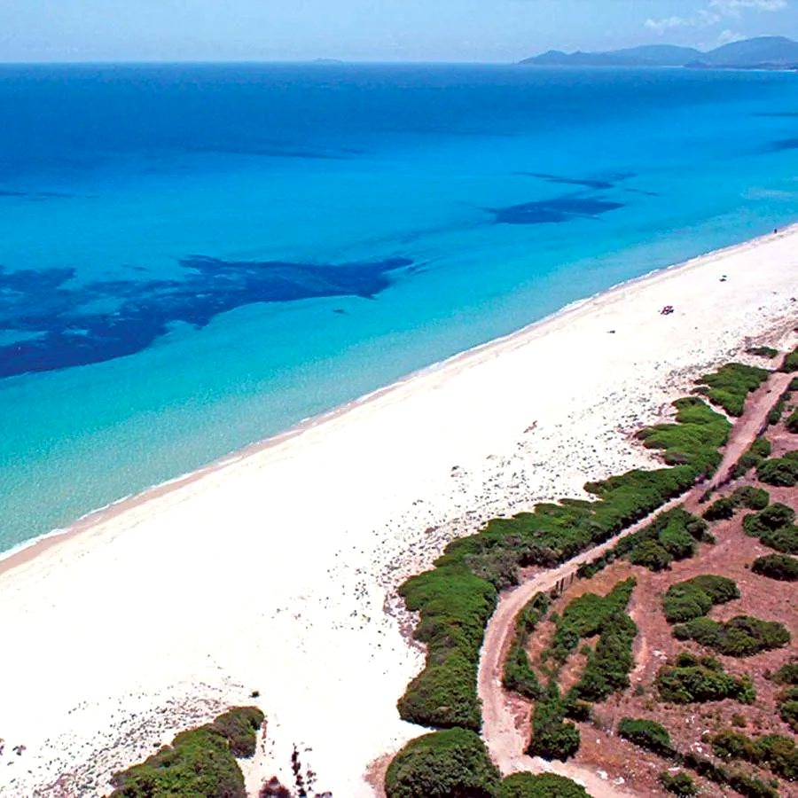
Lunghissima spiaggia chiara e mare cristallino.
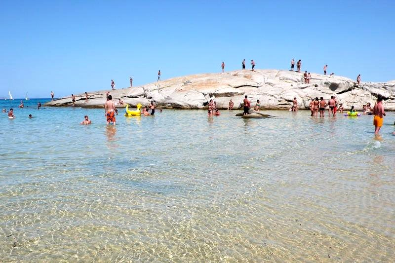
Acqua bassa e panorama caratteristico della Costa Rei.
Posizione
A pochi passi dalla Basilica di Sant'Elena e vicino al Parco Matteotti. Una posizione pratica per Cagliari, Poetto, Villasimius e Costa Rei.
Apri Google MapsMigliore tariffa diretta
Scegli le date e contattaci: ti risponderemo con disponibilità e migliore proposta diretta, senza commissioni delle piattaforme.